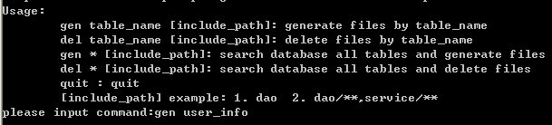

|
rapid_generator
核心理念¶为你生成一切,再根据所需手工copy回工作区
通常代码生成器存在的问题.¶
特性¶
生成器的运行¶在eclipse中运行¶
public class GeneratoMain {
public static void main(String[] args) throws Exception {
GeneratorFacade g = new GeneratorFacade();
g.deleteOutRootDir(); //删除生成器的输出目录
// g.generateByTable("table_name","template"); //通过数据库表生成文件,template为模板的根目录
g.generateByAllTable("template"); //自动搜索数据库中的所有表并生成文件,template为模板的根目录
// g.generateByClass(Blog.class,"template_clazz");
// g.deleteByTable("table_name", "template"); //删除生成的文件
}
}独立版运行¶下载standandalone-rapid-generator.zip,解压并运行rapid-gen.bat  生成器讲解¶生成器模板路径可以引用相关变量¶示例:dao/${basepackage_dir}/${className}.java,根据该变量生成输出文件 如果basepackage_dir = com/company/rapid, className=UserInfo 那么完整路径则为:dao/com/company/rapid/UserInfo.java 自动搜索某个目录所有模板文件,无需配置¶代码生成器模板可以引用的相关变量¶ 1. g.generateByTable("table_name") 方法可以引用的变量
table : cn.org.rapid_framework.generator.provider.db.table.model.Table
2. g.generateByClass("class") 方法可以引用的变量
clazz : cn.org.rapid_framework.generator.provider.java.model.JavaClass
3. g.generateBySql(Sql) 方法可以引用的变量
sql : cn.org.rapid_framework.generator.provider.db.sql.model.Sql
4.公共变量
env : 系统环境变量
System.getProperties() : 直接引用,没有前缀
generator.properties 文件中的所有属性,直接引用,没有前缀
gg : 模板控制变量, cn.org.rapid_framework.generator.GeneratorControl每个模板有gg变量可以控制自身的自定义配置 (每一个模板都会创建新的gg实例)¶如是否生成,是否覆盖目标文件,甚至是生成其它文件 示例: ${gg.setIgnoreOutput(true)}, 参考: rapid_generator_gg 支持生成(gen)及删除操作(del),即生成的代码也可以很方便的删除¶自动拷贝二进制文件至输出目录¶如模板目录下的 zip,rar,doc文件将会自动拷贝至输出目录,不会破坏文件格式 (通过扩展名自动识别) 自动删除模板扩展名:.ftl,.vm¶举例: 如你有一个模板 SqlMap.xml.ftl 将变为 SqlMap.xml 所以你要生成ftl扩展名的文件,应该将文件名从 list.ftl => list.ftl.ftl
模板自动include同级目录:macro.include文件¶示例: 如你的模板为 java_src/com/project/UserDao.java, 将自动include: java_src/com/project/macro.include 及 根目录的macro.include generator.xml (或者generator.properties)配置文件¶
2.自动替换generator.properties中的句号(.)为反斜杠,设置key为key+"dir"后缀 示例: pkg=com.company => pkg_dir=com/company
十. 数据库表配置,用于自定义生成器模板引用的table变量¶配置文件必须存放在classpath: generator_config/table/table_name.xml (该文件生成器可以生成，自己再自定义修改) <!-- <table sqlName="数据库表名" className="类名称" tableAlias="表的别名"> <column sqlName="数据库列名" columnAlias="列的别名" javaType="自定义javaType" unique="是否唯一性约束" nullable="是否可以为空" pk="是否主键,在表没有主键的情况下,可以指定一个代理主键" updatable="是否可以更新" insertable="是否插入" enumString="枚举值,以分号分隔,示例值:M(1,男);F(0,女) 或者是:M(男);F(女)" enumClassName="如果枚举有值,生成的类名称将是这个,没有枚举值，该配置无用.示例值:Sex" /> </table> --> <table sqlName="user_info" className="UserInfo" tableAlias="UserInfo" > <column sqlName="username" columnAlias="用户名" javaType="String" unique="false" nullable="true" pk="false" updatable="true" insertable="true" enumString="F(1,Female);M(0,Male)" enumClassName="用户枚举" /> <column sqlName="password" columnAlias="password" javaType="String" unique="false" nullable="true" pk="false" updatable="true" insertable="true" enumString="" enumClassName="PasswordEnum" /> </table> 生成的代码插入文档的某个部位通过sql语句生成代码 table变量参考table模板变量参考 |
► Sign in to add a comment